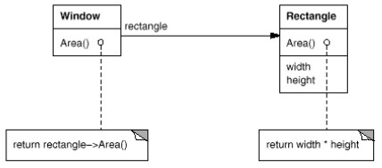

Vocabulaire
- Tigh coupling : couplage (dépendance) fort entre 2 parties différentes du code - considéré comme un écueil à éviter.
- Loose coupling : le contraire ; but souvent recherché.
Critiques de la POO
Object-oriented approach poses problem when we want to write concurrent code. Concurrency does not mix well with object-oriented programming, because objects hide implementation, and hide exactly the wrong thing which make them not very composable. They hide mutation, changing their internal state without saying they do so. And they share data between them.Mixing sharing and mutation has a name : data race.
We can use locks, but locks don't combine either. (Bartosz Milewski, Category Theory for programmers)
Composition Versus Inheritance
| Héritage | Composition |
|---|---|
| Relation "est un" | Relation "a un". Utilise ce que font les objets, leur comportement. |
|
Permet de créer des classes à partir de classes existantes.
Les sous-classes peuvent réutiliser les fonctionnalité des super-classes. |
Permet de combiner des types pour former des types plus complexes.
Une classe contient des références à des objets d'autres classes ; la classe peut utiliser ces objets pour proposer des fonctionnalités. |
| "White-box reuse" : les détails de la super-classe sont souvent visibles dans la sous-classe. | "Black-box reuse" : les détails internes des objets restent cachés. |
| Les types impliqués sont déterminés à la compilation | Les types impliqués sont déterminés à l'exécution |
Si l'héritage permet de réutiliser facilement du code, ses inconvénients sont suffisamment nombreux pour que la composition soit unanimement recommmandée.
Intérets de l'héritage
L'héritage permet une réutilisation facile du code car une sous-classe bénéficie des méthodes de la super-classe qu'elle ne redéfinit pas.Permet aussi une utilisation facile du polymorphisme d'inclusion.
Rappel :
abstract class Animal {
abstract void parler();
}
class Chien extends Animal {
void parler() { System.out.println("Ouah"); }
}
class Chat extends Animal {
void parler() { System.out.println("Miaou"); }
}
On bénéficie de la liaison dynamique (dynamic binding), une variable du type de la super-classe peut contenir une référence à un objet de n'importe quelle sous-classe.
Animal animal = new Chien();On peut même écrire du code générique s'appliquant à toutes les sous-classes :
class Interrogateur {
static void faireParler(Animal a) {
a.parler();
}
}
Problèmes de l'héritage
Une fausse bonne idée ?
L'héritage exprime des liens de manière rigide, ne s'adapte pas forcément aux évolutions du modèle :Par exemple si on rajoute
class Crevette extends Animal, la méthode parler() a-t-elle encore un sens ?
class Crevette extends Animal {
void parler() { /* ??? */ }
}
Pouvait correspondre à l'époque des cycles de développement en cascade, en V ou en Y, mais pose plus de problèmes à l'heure des méthodes agiles.
Encapsulation faible
Une super-classe fournit souvent l'implémentation de certaines méthodes ; les sous-classes ont accès à certains détails de leur super-classe.Des modifications dans la super-classe entraînent souvent des changements dans les sous-classes.
Exemple :
On utilise une API qui fournit une classe
X1 :
class X1{
public void doSomething(){ }
}
On sous-classe X1 en rajoutant une méthode public void work() :
class Y1 extends X1{
public void work(){
doSomething();
}
}
X1 évolue avec l'ajout de la méthode int work(), la sous-classe ne passe plus à la compilation :
class X1{
public void doSomething(){ }
public int work(){ return 2; }
}
error: work() in Y1 cannot override work() in X1 return type void is not compatible with intLa composition ne pose pas ce problème :
class X2{
public void doSomething(){}
public int work(){ return 2; }
}
class Y2{
X2 x = new X2();
public void work(){
x.doSomething();
}
}
L'intrication entre le code des sous-classes et des super-classes mène à parler de code fragile.
Bugs indirects
| Héritage | Composition |
|---|---|
Code de départ :
class X1{
public int doSomething(){
return 3;
}
}
class Y1 extends X1{}
class Exemple1{
public static void main(String[] args){
Y1 y1 = new Y1();
int test = y1.doSomething();
}
}
|
Code de départ :
class X1{
public int doSomething(){
return 3;
}
}
class Y1{
private X1 x1 = new X1();
public int doSomething(){
return x1.doSomething();
}
}
class Exemple3{
public static void main(String[] args){
Y1 y1 = new Y1();
int test = y1.doSomething();
}
}
|
Code modifié :
class X1{
public String doSomething(){
return "doSomething";
}
}
class Y1 extends X1{}
class Exemple2{
public static void main(String[] args){
Y1 y1 = new Y1();
int test = y1.doSomething(); // erreur de compilation
}
}
|
Code modifié :
class X1{
public String doSomething(){
return "doSomething";
}
}
class Y1{
private X1 x1 = new X1();
public int doSomething(){
return x1.doSomething(); // erreur de compilation
}
}
class Exemple4{
public static void main(String[] args){
Y1 y1 = new Y1();
int test = y1.doSomething();
}
}
|
On modifie X1
et le code de Exemple2 ne compile plus
alors que Exemple2 n'utilise pas X1
|
On modifie X1
et c'est le code de Y1 qui ne compile plus.
|
(code de ces exemples dans exemples/composition, lire les fichiers README).
Conclusion ?
D'autres arguments plaident en faveur de la composition :- La composition implique d'écrire des classes plus petites, plus enclines à se concentrer sur une seule tâche. La programmation par héritage aboutit souvent à des grosses classes dont la maintenance peut devenir difficile.
-
Une hiérarchie d'héritage aboutit souvent à des structures rigides pouvant être remises en cause par des demandes d'évolution.
Exemple sur https://www.youtube.com/watch?v=wfMtDGfHWpA0 - La composition facilite l'écriture de tests unitaires.
Préférez la composition à l'héritage
Certains vont jusqu'à considérer que l'héritage est une erreur de design et qu'il ne faut jamais l'utiliser.
Au minimum, avant de décider d'utiliser l'héritage, il faut s'assurer qu'on a une relation "est-un", et que cette relation sera valable durant toute la durée de vie de l'application.
Delegation
La délégation est une technique illustrant comment la composition peut remplacer l'héritage.Lorsqu'un objet d'un certain type contient une référence à un objet secondaire, qui fait effectivement le travail.
Toutes les opérations dans l'objet principal sont forwardées à l'objet secondaire.
Utilisé par plusieurs patterns. 
Exemple :
La classe
Pile<T> présente empiler(), depiler() etc. comme interface publique.
En interne, utilise
java.util.Stack
import java.util.Stack;
public class Pile<T>{
private Stack<T> stk;
public Pile(){
stk = new Stack<T>();
}
public void empiler(T t){
stk.push(t);
}
// ...
}
|
public class Client{
public void main(String[] arg){
Pile<Integer> p = new Pile<Integer>();
p.empiler(4);
}
}
|
Pile délègue son travail à Stack.
Souple car on peut changer l'implémentation de
Pile sans toucher au code client :
import java.util.List;
import java.util.LinkedList;
public class Pile<T>{
private List<T> stk;
public Pile(){
stk = new LinkedList<T>();
}
public void empiler(T t){
stk.addLast(t);
}
}
Pile<T> présente toujours la même interface publique.
En interne, utilise
java.util.LinkedList ; le code client reste inchangé.
Mais le client n'a pas le choix de l'implémentation de la liste.
Pour remédier à ça, on peut par exemple conjuguer la délégation avec de l'injection par constructeur :
import java.util.List;
public class Pile<T>{
private List<T> stk;
public Pile(List<T> li){
stk = li;
}
public void empiler(T t){
stk.addLast(t);
}
}